从任务、方法与架构三个角度，建立人工智能概念之间的关系。
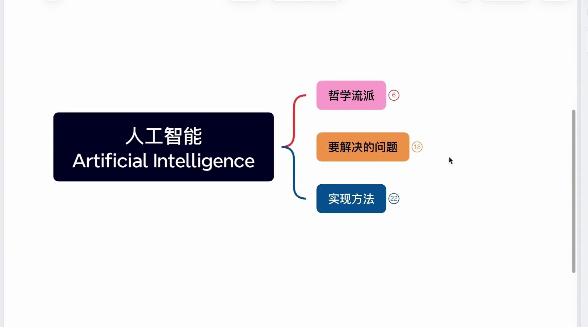
学习人工智能时，首先需要建立一套能用于阅读资料、讨论方案和理解系统的概念框架。人工智能、机器学习、神经网络、深度学习与 Transformer 经常同时出现，但它们并不处于同一分类层级。
理解这些关系，能够帮助开发者判断一个术语描述的是研究目标、应用任务、训练方式，还是具体的模型结构。调用模型接口并不要求先掌握全部底层数学，但清楚关键概念有助于选择技术、定位问题，并理解后续的神经网络计算。
本文从三个角度展开：关于智能的研究思路、需要解决的问题，以及实现智能的方法。先建立整体结构，再逐步进入训练范式和模型架构。
思维导图以“人工智能 / Artificial Intelligence”为中心，连接哲学流派、要解决的问题和实现方法。三个分支分别回答“沿什么思路研究”“完成什么任务”和“采用什么方法”。
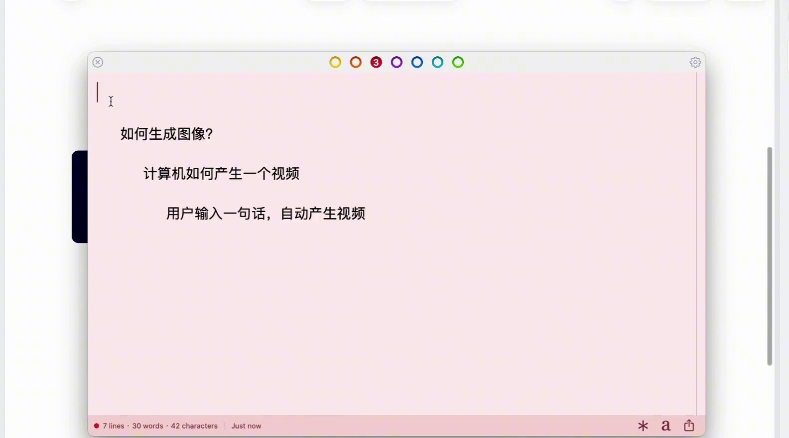
理论分析与代码实现承担不同的任务。代码把方案变成可以运行的系统，而概念、模型和方法决定系统需要解决哪些问题。没有立即出现代码，并不意味着讨论缺少工程价值。
以“用户输入一句话，系统自动生成视频”为例。可以先把需求拆成若干前置问题：计算机如何表示视频，如何生成连续画面，以及如何让画面符合输入文字。视频由按时间组织的图像帧构成，因此生成画面并组织成视频，是理解这一任务的起点。
仅仅生成图像仍不够。系统还要处理文字所描述的对象、动作、场景以及它们之间的关系，并维持相邻画面的时间一致性。由此，问题从视频编码逐步延伸到图像生成、语言表示和跨模态关联。
这类分解发生在写代码之前，却直接影响技术路线和模块划分。明确问题之间的依赖，才能判断哪些已有工具可以复用，哪些能力需要模型学习。
便笺把“输入一句话，自动产生视频”向前拆分为视频生成、图像生成等问题，展示了从最终需求寻找前置能力的过程。
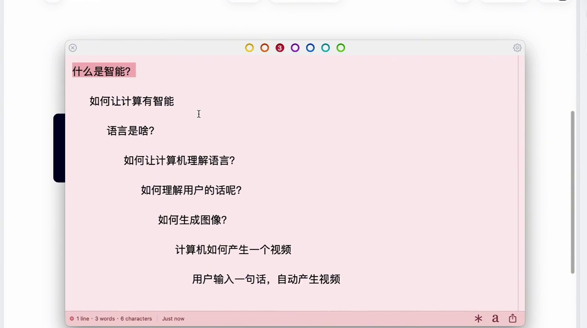
继续追问文生视频的前置条件，就会涉及语言的表示、语义关系，以及机器如何根据输入进行推断或生成内容。再向上，可以讨论什么是智能，以及如何评价机器表现出的能力。
这些问题具有不同的抽象层次。较高层讨论研究对象、目标与判断标准；中间层讨论表示方法、学习机制和模型结构；较低层才落实为算法、程序、数据处理与部署。它们相互支持，并不是互相替代。
同一种表示或学习方法也可能服务于多个具体任务。例如，对语言和图像关系的研究，既可能用于文生视频，也可能用于图像描述、视觉问答和检索。理解较一般的问题，往往能够支持不止一种产品功能。
这种分层有助于阅读技术资料：需要先识别作者正在讨论哪个层次，再判断它与自己的实现任务有什么关系。抽象理论不等于完整产品，但能够为实现提供方向与约束。
图中的追问链从视频和图像生成延伸到语言与智能。它用于展示抽象层次，不表示所有系统都必须先解决完整的人类智能，才能完成一个具体生成任务。
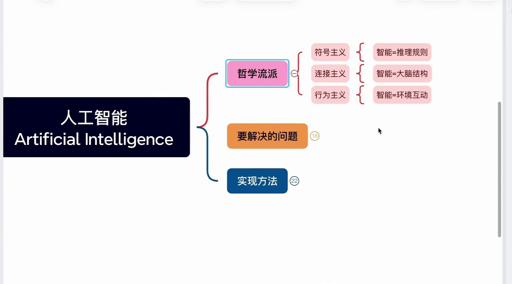
人工智能研究如何构建具有智能行为的机器和程序。John McCarthy 将其概括为制造智能机器的科学与工程。不同研究传统会分别强调推理、学习、感知、行动或目标达成，因此定义和评价标准存在差异，但不能据此断言人工智能没有正式定义。
日常使用中，人们常通过系统的表现形成直观判断。例如，对话系统能够衔接上下文，实时语音系统能够接收和生成声音，游戏 NPC 能够规划行动或响应玩家。这些能力可以成为理解智能行为的入口，但“像人”并不是所有人工智能系统的必要条件。
自动泊车结合感知、定位、规划与控制；游戏角色可能依赖规则、搜索或学习模型。它们是否采用机器学习，需要检查具体实现。另一方面，数组排序虽然体现了计算能力，通常并不因此单独被归为人工智能。
当一种技术逐渐普及时，人们可能不再觉得它“神奇”，但研究领域的归属不能只由这种感受决定。更可靠的做法是明确任务、能力和方法，再讨论系统的性质。
导图将符号主义、连接主义与行为及环境交互的思路并列。它们用于理解研究取向；聊天、NPC 和自动泊车则是观察具体系统能力的例子。
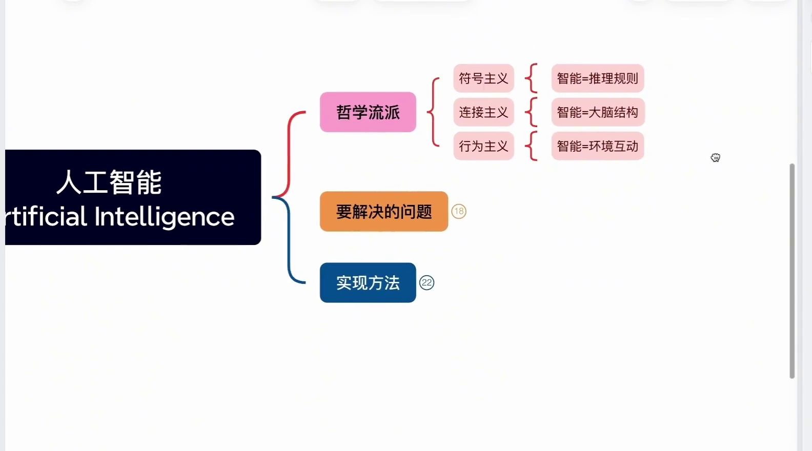
符号主义强调知识表示与规则推理。例如，“所有人都会死亡；苏格拉底是人；因此苏格拉底会死亡”，展示了根据事实和逻辑规则得出结论的过程。知识库、逻辑推理、搜索与规划都可以体现这一研究方向。
游戏 NPC 按规则采取行动，机器人利用地图搜索迷宫出口，能够帮助理解显式规则和搜索的作用。不过，一个具体系统往往结合多种技术，不能仅凭应用名称判定其研究流派。
连接主义强调由大量相互连接的计算单元形成能力。人工神经网络从生物神经系统获得启发，通过连接权重和学习过程建立输入到输出的映射；它是数学模型，并非对真实大脑的完整复制。
强调行为与环境交互的研究关注系统怎样感知环境、采取行动并利用反馈。例如，个体或群体可以通过局部交互形成适应性行为；在机器学习中，强化学习具体研究行动、奖励与长期结果之间的关系。两者有关联，但不能直接视为完全相同的概念。
这些思路可以组合使用。一个应用可以同时使用神经网络进行感知、用规则约束决策，再通过反馈改善策略。Transformer 本身属于神经网络架构，应用系统中是否还使用规则或强化学习，则取决于具体设计。
图中的“推理规则”“大脑结构”“环境互动”是便于记忆的概括。其中“大脑结构”应理解为启发来源，不能等同于人工神经网络与人脑结构完全一致。
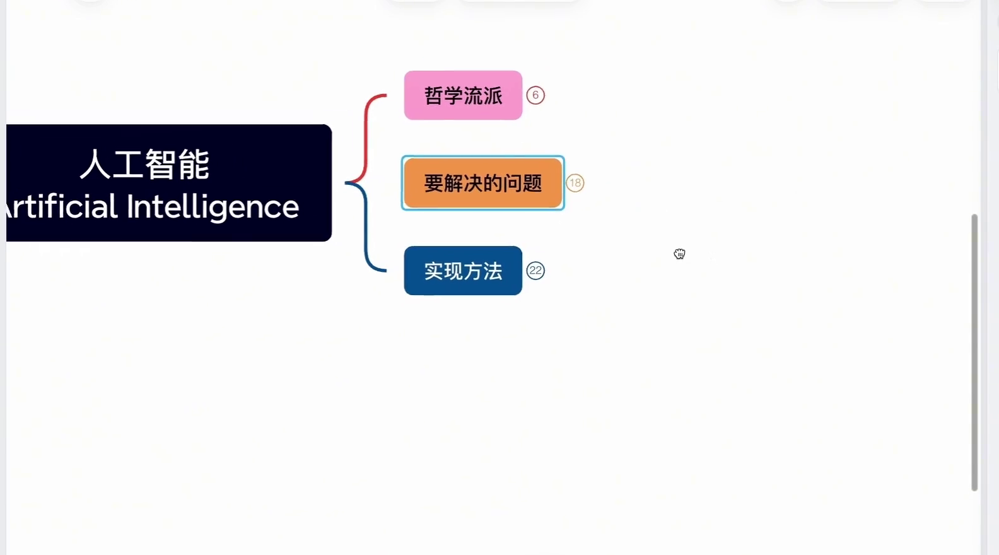
同一对象可以按不同维度分类。例如，一个人既有年龄属性，也有职业属性；“未成年人”和“前端工程师”回答的并不是同一个问题。不能根据一个维度的类别，直接推断另一个维度的类别。
人工智能也如此。符号主义和连接主义描述研究思路；自然语言处理、语音技术和计算机视觉描述任务领域；神经网络和 Transformer 描述模型或方法。它们可以同时用于描述同一个系统。
这里重点介绍语言、语音和视觉三类常见任务。天气预测、蛋白质结构分析等同样可以使用人工智能方法，只是它们各自具有不同的数据形式、任务约束和评价指标。
导图切换到“要解决的问题”分支。判断术语关系时，应先确认它属于研究思路、任务领域还是实现方法，再讨论它与其他术语的联系。
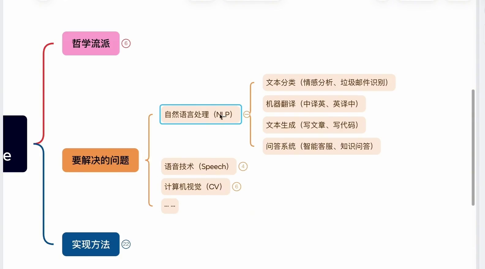
自然语言处理（Natural Language Processing，NLP）研究计算机如何处理、分析和生成自然语言。它关注文本中的词语、结构、上下文和语义关系，并不限定只能使用某一种模型。
文本分类把文本分入指定类别，例如识别垃圾邮件或判断情感倾向。机器翻译把一种语言转换成另一种语言。文本生成包括撰写文章、生成文案或代码；问答系统则根据问题和可用信息组织回答，常用于智能客服和知识查询。
Transformer 可以用于这些任务中的多种任务，因此不应把它与“文本分类”或“问答系统”当作同一层级的选项。前者是一类架构，后者是需要完成的任务。
实际开发时，需要先确定输入、输出和评价标准，再选择模型、数据和训练方法。自然语言处理不仅是一个应用界面的名称，还包含语言表示、建模与评测等研究和工程问题。
NLP 分支列出文本分类、机器翻译、文本生成与问答系统；垃圾邮件识别、情感分析、智能客服和知识问答是这些类别下的具体任务。
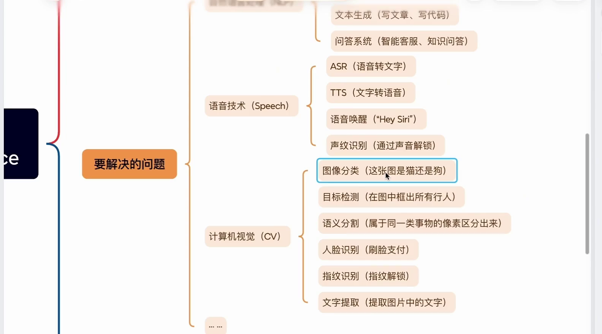
语音技术处理声音信号与语言信息。自动语音识别（ASR）将语音转换为文字；语音合成（TTS）根据文字生成语音；语音唤醒检测指定唤醒词；声纹识别利用声音特征区分或验证说话人。
“Hey Siri”这类唤醒词检测，是语音交互中的一个环节。声音还包含音高、音色、节奏等信息，需要经过采样、表示和建模，不能把语音数据与文本数据完全等同。
Transformer 最初以序列建模架构提出，后来也被用于视觉、语音与多模态任务。GPT 是采用 Transformer 相关结构的语言模型系列，但不能因此把 Transformer 限定为“只处理文字”的架构，也不能认为所有语音或生成系统都必须采用它。
同一种架构进入不同任务领域时，仍需适配数据。例如，文本需要分词或其他 token 化方式，音频则需要适合声音信号的表示。任务的特点不会因为使用相同架构而消失。
Speech 分支包含 ASR、TTS、唤醒词与声纹识别。它们描述系统要完成的功能，不能用来直接推断系统采用了哪一种神经网络。
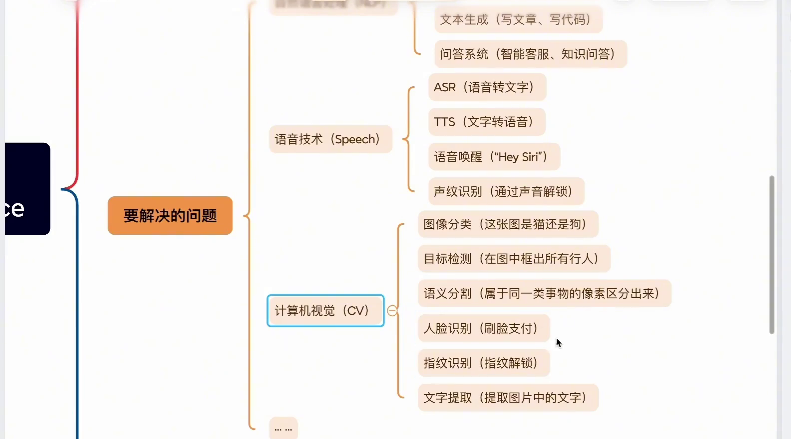
计算机视觉研究如何从图像或视频中提取和使用信息。图像分类为整张图像分配类别，例如判断图中主要对象是猫还是狗。目标检测还需要给出对象的位置，例如在商场画面中框出行人；连续视频中的客流统计通常还需要跟踪和去重。
语义分割为像素分配类别。弹幕避开人物的功能可以借助人物区域的分割结果，判断哪些像素不应被弹幕遮挡。它与只画出一个矩形框的目标检测不同。
人脸识别、指纹识别和图像文字识别也涉及视觉信息。基于外观估计年龄等属性会受到数据和场景影响，不能把估计值当作确定事实。
这些名称描述不同任务，而不是某一个固定模型。类似地，一家公司开展 NLP 业务，表示其工作围绕语言任务展开，并不意味着“NLP”本身就是一种模型。
CV 分支列出图像分类、目标检测、语义分割、人脸识别、指纹识别和文字提取。比较这些任务时，重点关注输出是类别、位置、像素区域还是识别出的内容。
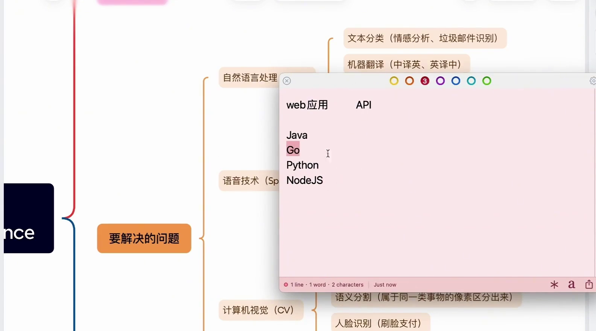
任务领域与实现技术的关系，可以类比 Web API 开发。同一个接口服务可以使用 Java、Go、Python 或 Node.js 实现，选择通常取决于团队经验、生态、性能需求和系统约束。
无论选择哪种语言，都可能需要处理数据存储、接口设计、权限、事务和部署等共性问题。ORM、分层架构或依赖注入是可选设计工具，并不是每个 Web 系统都必须具备的固定组成。
自然语言处理、语音技术与计算机视觉也有各自的任务特点。同一种模型可以服务多个领域，同一个任务也可能存在多种实现方法。识别任务本身，才能理解为什么方案会随着数据、算力和研究进展而改变。
OCR 指光学字符识别，是从图像中识别文字的任务或技术体系，不是与 Transformer 并列的单一模型架构。OCR 系统可以采用传统图像处理、卷积网络、Transformer 或多种方法的组合。
便笺把 Java、Go、Python、Node.js 放在同一个 Web API 需求下，强调应用目标与实现技术之间并不存在一一对应关系。
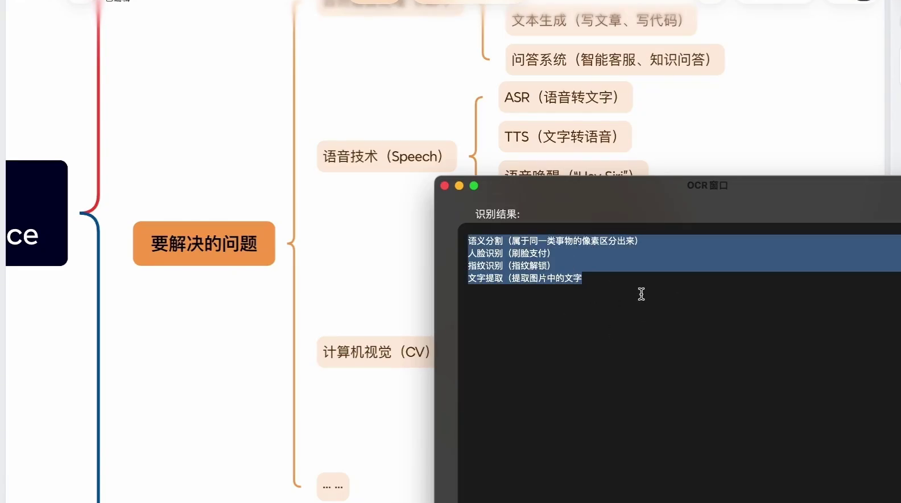
使用截图工具提取画面中的文字，是 OCR 的直接例子。支持图像输入的模型也可以完成文字识别，但不同系统的准确率、版面理解能力和适用条件可能不同。
语音合成同样有多条技术路线，既包括较早的拼接和参数化合成，也包括神经网络方法。Transformer 是可以采用的架构之一，不能把 TTS 与某一种架构画上等号。
即使模型架构不断变化，“提取图片文字”或“根据文本生成语音”这些任务仍然存在。识别对象、输入形式和质量标准相对独立于具体实现，这是理解技术演进时需要保留的区分。
在明确任务之后，下一步才是比较实现方法：需要哪些知识、数据、模型、训练过程和运行资源，才能在目标场景中达到要求。
OCR 窗口展示从图片中提取出的中文条目。应分别评价是否识别正确、是否保留阅读顺序和版面结构，而不是仅凭输出了一段文字就认为任务已经完全解决。
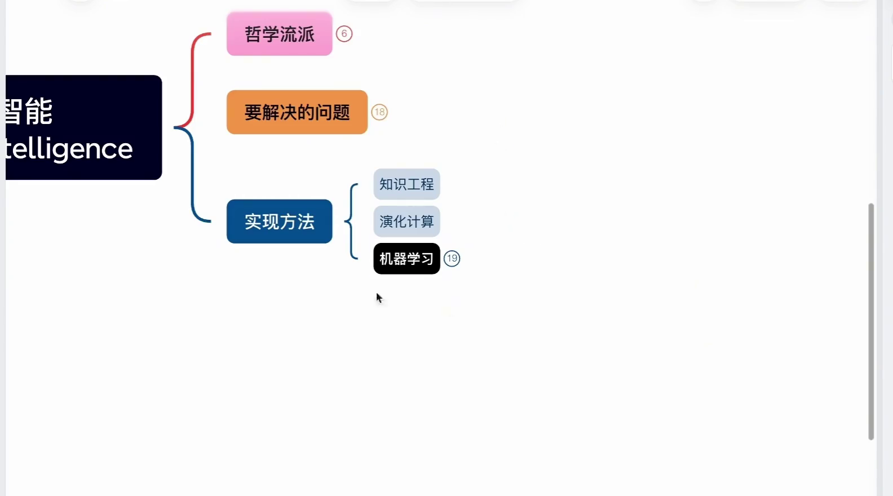
知识工程将领域知识组织为机器可以处理的表示，并通过推理或查询支持任务。知识可以表示为规则、图、逻辑关系等结构，不只是一棵“知识树”。专家系统和知识图谱体现了不同的知识组织与使用方式。
演化计算借鉴选择与变异等机制，在一组候选解中反复评估、保留和生成新候选解。可以用“较合适的方案留下，再产生下一代方案”理解其基本方向；具体算法仍需定义编码方式、适应度函数和搜索操作。
机器学习侧重从数据或经验中改善系统表现。这些路线并不是简单的“过去方法”和“现在方法”的替换关系：规则、搜索、优化和学习仍可在同一系统中发挥作用。
方法层面的概念需要落实为具体算法与软件实现，但它们并非只停留在理论讨论。建立概念层次，是为了理解实现中的选择，而不是将理论与工程割裂。
导图列出知识工程、演化计算和机器学习。机器学习被突出显示，表示后续内容的重点，不表示其他方法已经失去应用价值。
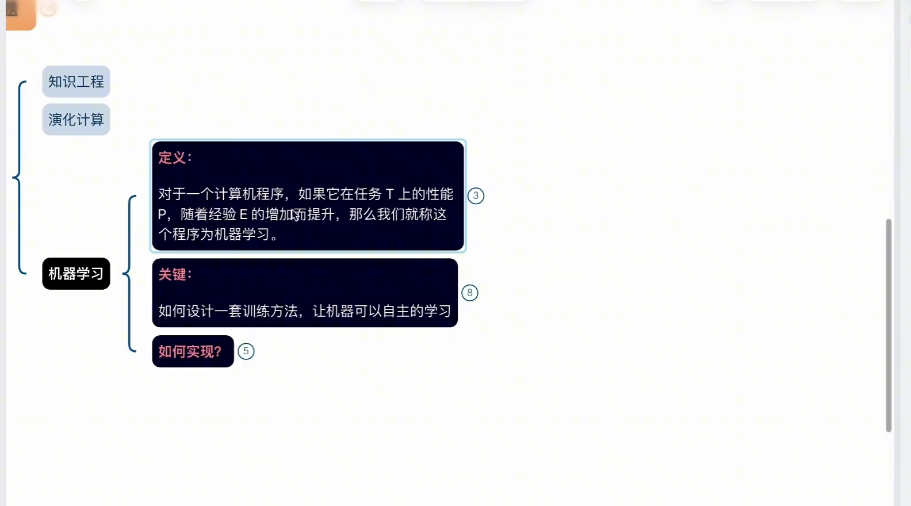
Tom Mitchell 的经典表述用任务 T、经验 E 和性能度量 P 描述机器学习：一个程序在任务 T 上按 P 衡量的表现，随着经验 E 而改善，就可以说它从经验中学习了。
这一定义把“学习”落实到可讨论的对象上。需要先说明要完成什么任务、能够使用什么经验，以及如何衡量改善。仅仅保存或读取了更多数据，并不能证明程序已经学到了更好的处理方法。
定义中的 T、E、P 分别对应任务、经验和性能度量。判断学习是否有效，需要用相应指标比较系统的表现。
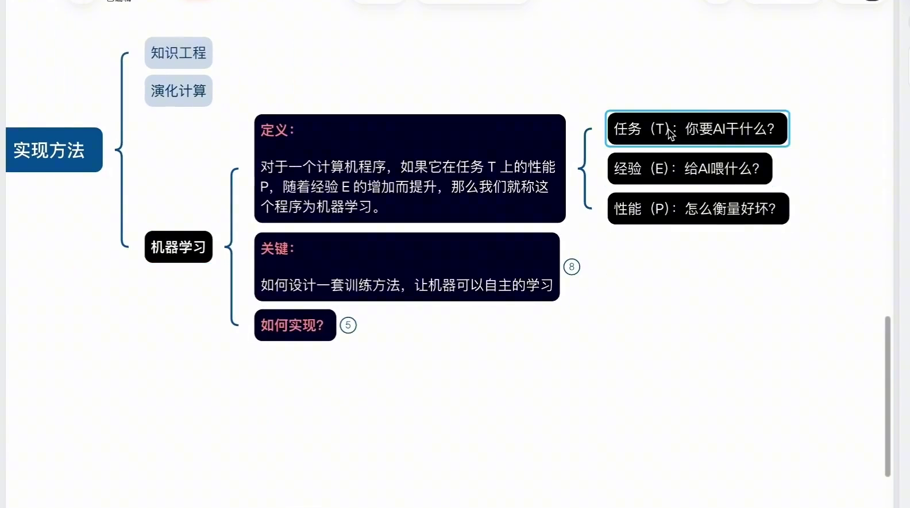
任务 T 可以是识别文章类别、生成文章、识别语音或判断图像内容。机器学习并不专属于 NLP；它也可以与其他领域的数据处理和专业知识结合。
经验 E 是系统用于学习的信息来源，例如带标签的训练样本、未标注文本，或与环境交互产生的记录。经验不必总是来自同一种数据，也不是数量越大就必然越有效；数据质量、覆盖范围和学习方法都很重要。
性能度量 P 用于判断任务完成得怎样。例如，分类可以使用准确率等指标，生成文章可以结合任务指标和人工评价。评价还需要考虑模型在未参与训练的数据上的表现。
可以再次用编程语言类比：通用语言能够实现不同应用，但每种应用仍有自己的输入、业务逻辑和约束。机器学习方法进入语音任务时，也仍需要适当的采样、音频表示和评测设计。
右侧三个问题分别是“完成什么任务”“从什么经验学习”“怎样评价表现”。它们共同描述一个具体学习问题，缺少任何一项都会使目标变得含糊。
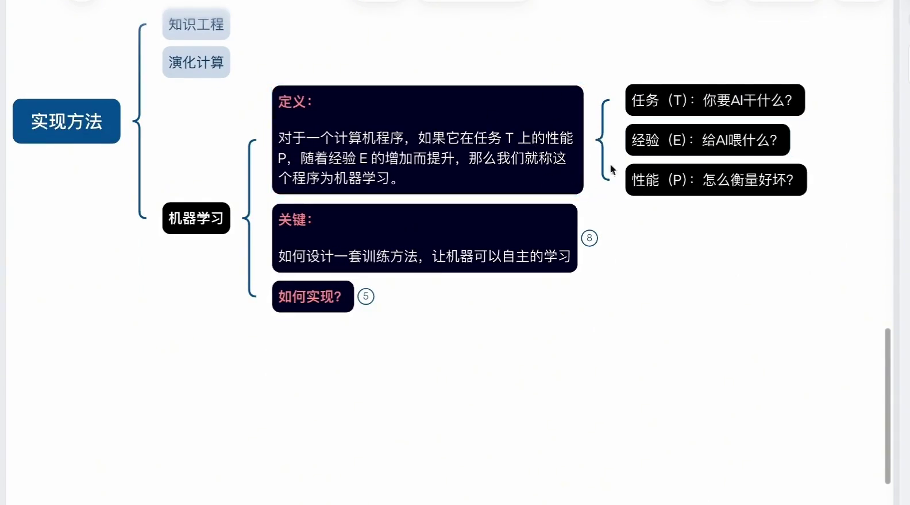
文章生成的任务是根据主题或上下文产生合适的文字。可利用的经验包括已有文本及相关反馈；性能可以从内容相关性、连贯性、事实性和任务要求等角度评估。具体采用哪一种模型和训练算法，需要在这个目标框架下进一步设计。
围棋提供了另一个例子：任务是选择落子并争取获胜，经验可以来自棋局或自我对弈，性能可以用对局胜率等指标衡量。最初的 AlphaGo 结合了人类棋局的监督学习、自我对弈的强化学习以及搜索；AlphaGo Zero 则从自我对弈中学习，不依赖人类棋谱训练。不能把不同系统都概括为“读取所有历史棋谱”。
经验增加并不自动保证性能提升。机械记忆训练数据、使用有偏或错误的数据、训练过度，都可能使模型在新数据上的表现变差。学习的目标是形成对任务有效的规律，而不是单纯记住更多记录。
如果评估结果不理想，需要检查数据、模型、训练方法和评价设置，再有针对性地调整。增加训练量只是可能的措施之一，并不是通用答案。
T、E、P 可以分别映射到文章生成和围棋任务。棋谱与自我对弈是不同的经验来源，胜负结果则是评价或奖励设计中的信息。
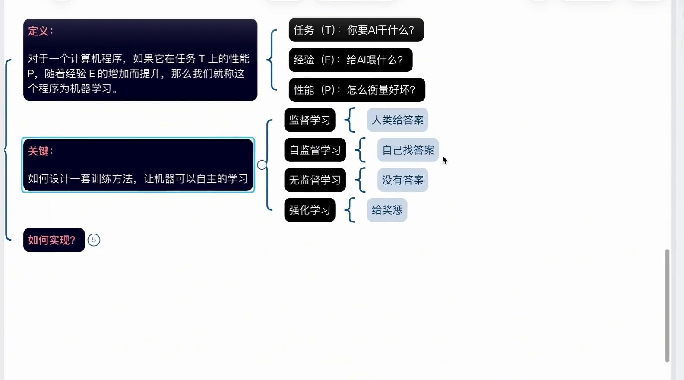
把棋谱打印到控制台一百遍，并不会使一个程序自动学会下棋。数据只有通过适当的表示、学习目标和更新规则，才能影响模型的行为。
训练范式用于区分学习信号如何获得、模型如何利用经验。监督学习、自监督学习、无监督学习和强化学习是常见概念，但实际研究中的分类存在交叉，不能把它们当作四个完全封闭的盒子。
确定范式之后，还需要选择数据、模型和优化方法，并实现训练与评估流程。范式描述学习问题的组织方式，具体算法负责把这一方式变成可执行的计算。
“人类给答案”“自己找答案”“没有答案”“给奖惩”是记忆提示。更准确的区分应关注标签、由数据构造的预测目标、数据内在结构和环境奖励。
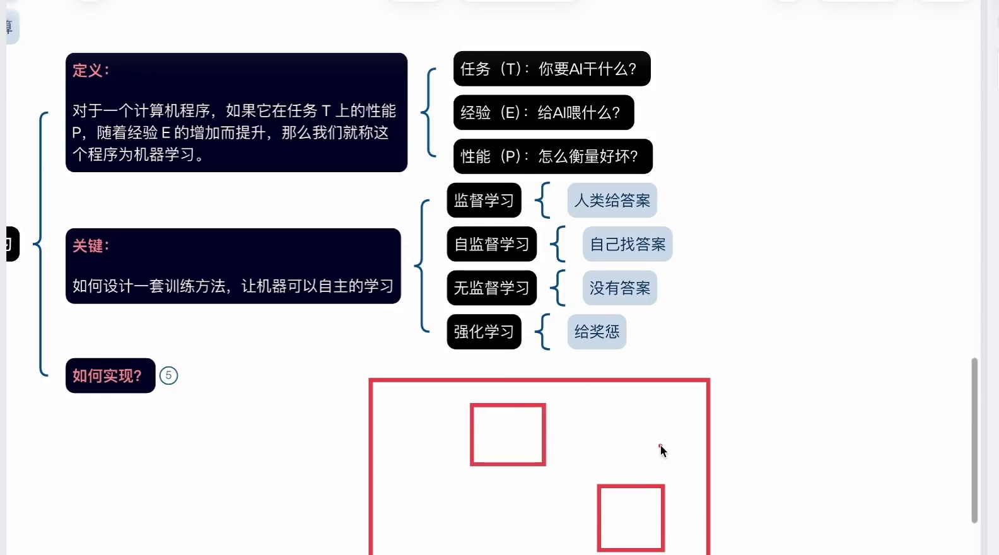
监督学习使用输入与目标输出之间的对应关系进行训练。标签可能由人工标注，也可能来自已有业务记录或测量结果，因此“人工给答案”是常见情形，而不是唯一来源。
例如，图像分类可以为整张图片标注“猫”或“狗”；目标检测还要标出对象的位置。模型根据训练样本学习从输入到标签的映射，再用未参与训练的数据检验是否能推广到新的样本。
标注规则应明确、一致，并与任务相匹配。类别标签、矩形框、分割区域、文本实体和语音内容分别支持不同目标，不能只把“有标签”理解为一种固定的软件操作。
图中的矩形框示意人工标注的位置。分类标签与位置标注提供的信息不同，应按照目标任务选择合适的标注形式。
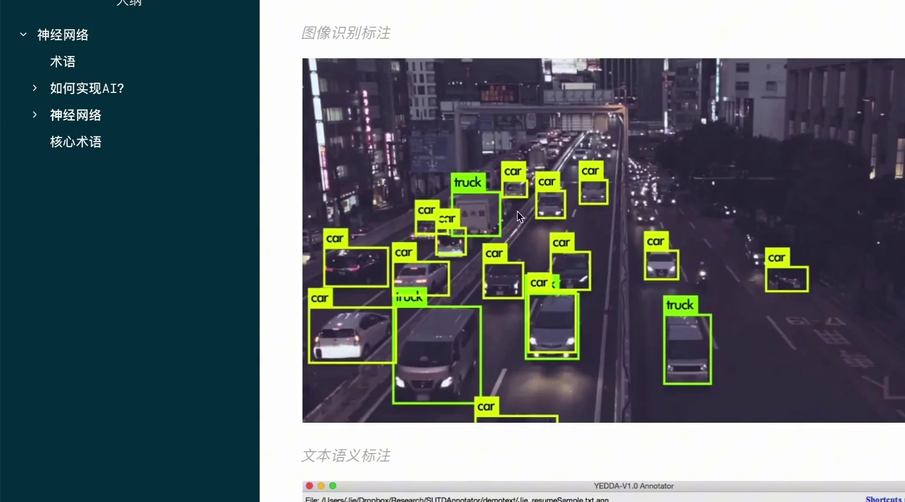
街道图中的车辆被矩形框圈出，并标有 car、truck 等类别。每一个框同时提供对象的空间范围和类别信息，帮助检测模型学习“在哪里”以及“是什么”。
同样的思想也可以用于其他数据。文本可以标出人物、地点或组织；音频可以标出说话内容、时间片段和说话人编号。输入形式不同，监督信号的表示也会不同。
因此，构建训练集不仅是收集文件，还需要明确输入与标签怎样对应、标注粒度是否足够，以及标注质量能否支持所需的任务。
绿色矩形框给出车辆范围，car 与 truck 表示类别。这里展示的是目标检测标注，不能与只给整张图一个类别的图像分类标签混为一谈。
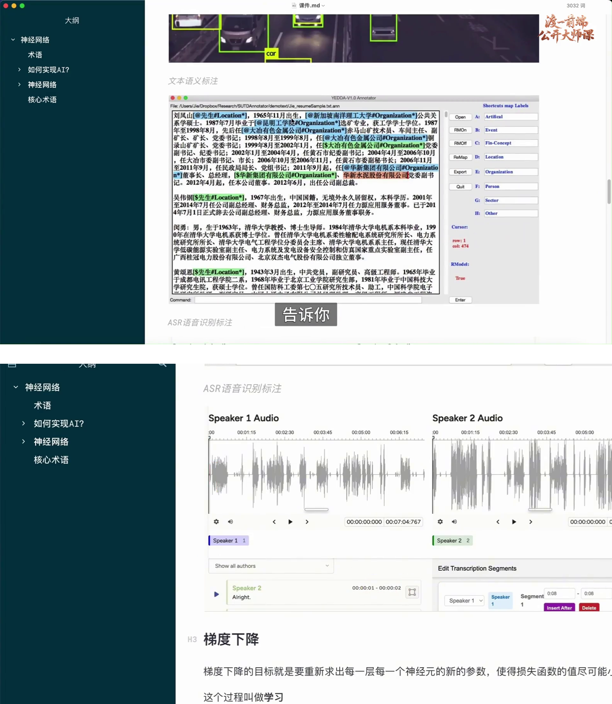
文本实体标注可将文章中的人物、地点和组织标为不同类别。模型学习的不只是一个词是否出现，还包括该词在上下文中的角色以及实体的边界。
音频标注可以把一个时间片段与文字对应，例如某段声音的内容为“Alright”，并使用 Speaker 1、Speaker 2 等编号区分说话片段。文字、片段边界和说话人编号支持的是不同任务，不能自动相互替代。
监督学习并不要求使用某个固定标注软件。无论采用怎样的界面或文件格式，都需要保证标签与输入的对应关系清楚、可被训练程序读取，并符合任务定义。
上图用不同颜色标出文本实体；下图结合波形、说话人编号和文字片段展示音频标注。编号区分的是数据中的说话片段，并不直接提供真实身份信息。
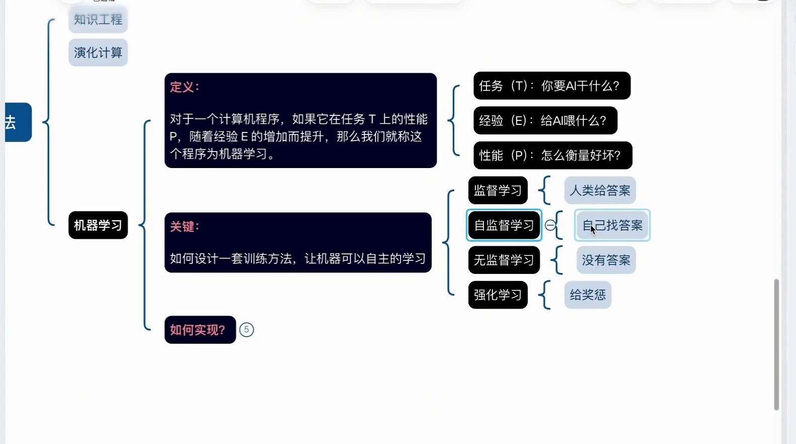
在大量任务中，为每条数据单独制作标签成本很高。自监督学习利用数据本身的结构构造预测任务，从而获得训练目标，而不是凭空生成正确答案。
例如，已知完整表达式“1+1=2”，可以把“1+1=”作为输入，将后面的“2”作为预测目标。输入与目标都来自已有数据，训练过程比较预测结果与保留下来的目标。
这与“完全不需要设计或管理”不同。人仍需设计预测任务、选择数据和训练方法，并处理数据质量问题。减少逐条人工标注，不等于取消人的所有参与。
“自监督学习—自己找答案”可进一步理解为“从已有数据构造输入与目标”。图中的不同学习方式反映的是学习信号的来源。
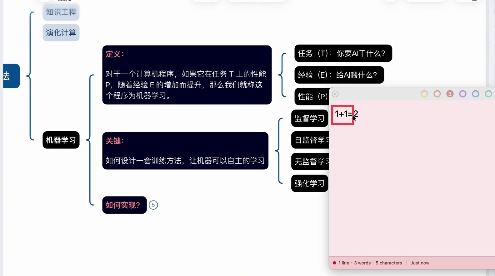
自监督任务常通过隐藏部分内容，让模型预测被隐藏的部分，再使用原始数据中的对应内容计算误差。表达式“1+1=2”是直观例子；文本中的后续 token 预测或遮蔽内容预测也体现了类似思路。
关键是预测目标本来就在数据中。与逐条人工制作标签相比，这种方式可以利用大规模未标注数据；但模型仍然接受明确的训练信号，不是没有目标地读取数据。
无监督学习则更侧重在没有任务标签的条件下发现结构，例如聚类或学习表示。自监督与无监督在术语使用上有联系和交叉，理解时应回到具体训练目标，而不只依靠名称判断。
便笺中的已知等式同时提供输入和验证目标。使用该类示例时，必须避免把模型能够看到的目标内容泄漏到本应隐藏的输入中。
无监督学习关注没有任务标签的数据结构，例如按照特征相似性聚类。工厂质检可用一个相近的例子理解：大量螺丝是良品，缺陷样本数量少、类型多，很难收集每一种弯曲、缺口或尺寸偏差。
一种思路是先学习正常产品的特征或分布，再把明显偏离的样本作为异常候选。这属于异常检测的常见方向；若训练集明确只包含正常样本，也常被称为单类学习或半监督异常检测，不能把它简单等同于普通的有标签分类。
瓷器碎片可以根据纹理、材质等特征进行相似性分组，但相似性本身不能确定真实年代。聚类可以辅助整理样本；要把某一组解释为具体朝代，仍需要已知样本、考古背景或其他可靠证据。
强化学习关注智能体与环境的交互。智能体采取行动并获得奖励，通过学习改善长期累计回报。围棋可以用对局结果提供反馈；格斗游戏也可以根据胜负、得分或其他经过设计的信号评价行动，而不需要为每一帧都提供唯一正确动作。
这些方式可以组合。例如，先利用已有数据学习表示，再通过有标签样本或奖励反馈进一步训练。半监督学习则结合有标签和无标签数据。选择范式需要依据可获得的数据和任务反馈。
“没有答案”更准确地指缺少指定任务的标签；“给奖惩”指奖励信号。质量检测和瓷器分组有助于理解相似性，围棋和游戏则突出行动与后续结果的关系。
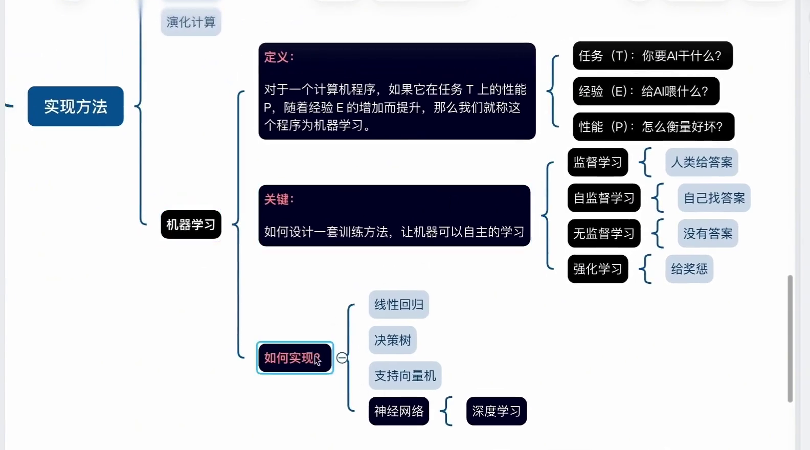
机器学习具有多种模型与算法。在线性回归中，可以用一条直线或更高维的线性函数描述输入与输出的关系，通过优化参数使预测误差尽可能小。目标通常是减小整体损失，例如平方误差和，而不是让直线穿过尽可能多的样本点。
决策树依据特征划分数据，支持向量机使用另一类决策边界与优化准则，神经网络则通过多层参数化计算建立映射。不同方法各有适用条件，不能只按是否“流行”判断优劣。
模型结构、训练范式与应用任务可以组合讨论。例如，神经网络可以接受监督信号，也可以用于自监督学习或强化学习；同一训练范式也并不只对应一种模型。
“如何实现？”分支中的线性回归、决策树、支持向量机和神经网络是模型或算法方向，与标签或奖励如何获得属于不同问题。
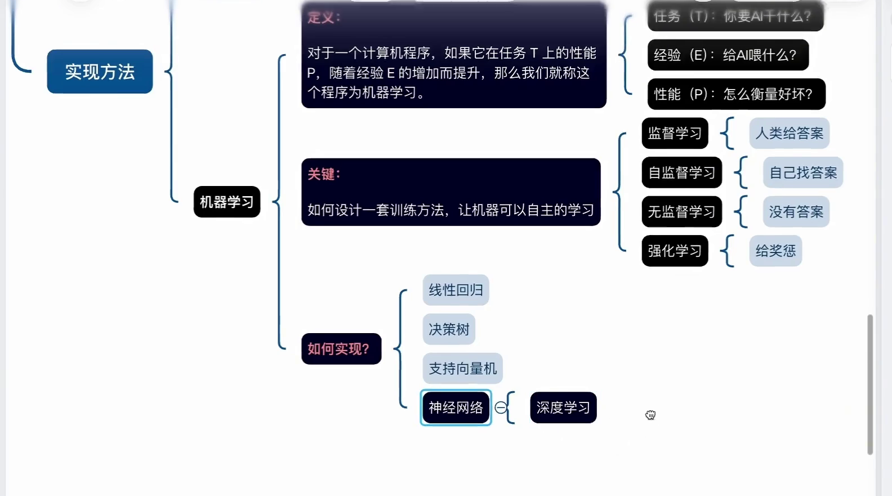
深度学习通常指通过多层神经网络学习多级表示的方法。浅层神经网络也属于神经网络，因此不能把“所有神经网络”直接等同于“深度学习”。
强化学习描述利用环境奖励学习行为策略的问题设置和方法体系，强调行动对长期结果的影响。它与深度学习不是互斥类别，也不处于同一分类维度。
使用深度神经网络表示策略或价值函数的强化学习方法，通常称为深度强化学习。这一组合说明，理解术语之间的关系，比把术语背成彼此独立的名称更有帮助。
神经网络与深度学习位于模型方法分支，强化学习位于训练与交互方式分支。图中的连线应理解为概念关系，而不是四种方法只能择一使用。
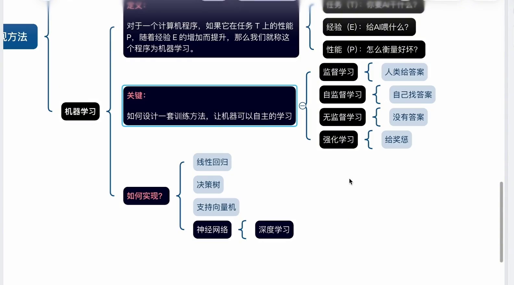
可以用一组问题整理已经建立的概念：系统要完成什么任务，拥有哪些数据或反馈，准备采用什么模型，以及怎样评价训练结果。任务领域、训练范式与实现方法分别回答其中不同部分。
机器学习是人工智能的重要方法，但人工智能并不只包含机器学习。神经网络是机器学习中的一类模型，多层神经网络构成深度学习的重要基础；Transformer 则是一种具体的神经网络架构。
这些关系也可以用软件工程类比。架构图描述组织方式，代码把组织方式实现为可执行程序，数据和训练决定具体参数，测试与部署则决定系统能否在目标环境中可靠使用。每一步都具有独立职责。
导图同时展示 T、E、P，学习范式以及模型方法。阅读时应沿各自分支理解含义，再把相关分支组合成一个具体系统的方案。
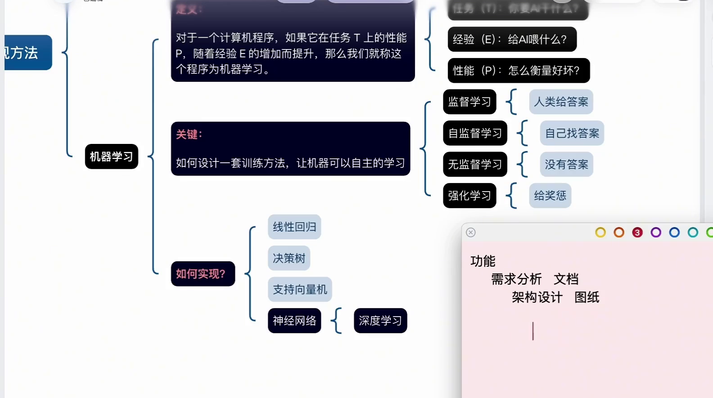
一套可用系统通常需要经过需求分析、架构设计、模块设计、实现、评估与部署。传统瀑布流程把这些阶段显式划分，敏捷开发则更强调迭代，但需求、设计和验证这些工作并不会因此消失。
神经网络架构描述计算单元如何连接，Transformer 进一步规定了注意力等计算结构。要完成具体任务，还需要选择模型规模、输入表示、数据、训练目标、优化方法和推理方案。
因此，知道架构名称，并不等于已经得到一个训练完成的模型或业务产品。算法、代码、参数与运行系统相互关联，但分别承担不同角色。建立这一层次关系，有助于理解后续的神经元、前向传播和训练过程。
便笺中的需求文档、架构图和类图展示了设计成果的不同形式。它们用于说明从目标到实现的逐步细化，而不是规定人工智能项目必须采用某一种开发流程。
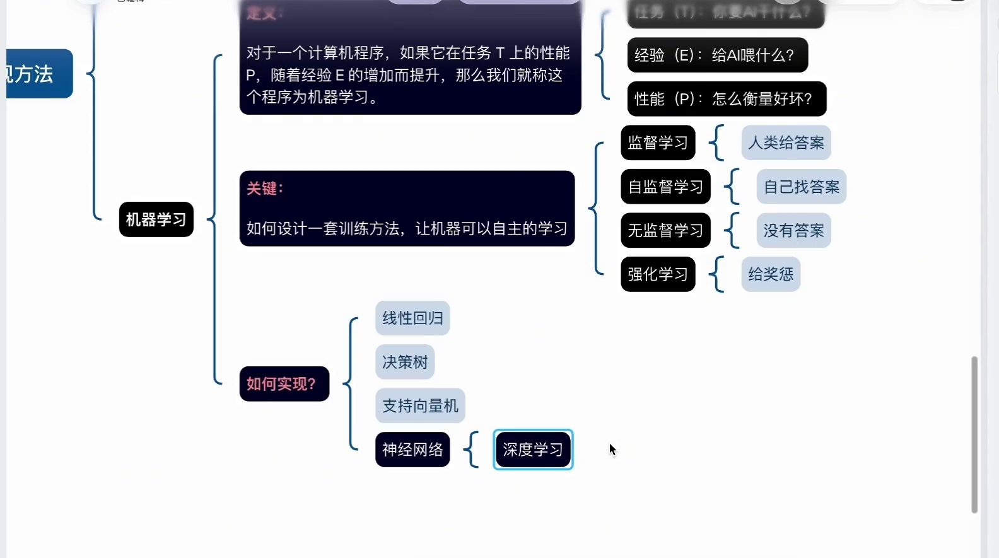
遇到新的人工智能术语时，可以先判断它描述的是任务、数据与反馈、模型结构、训练算法，还是部署工具，再寻找它与已有概念的关系。
本章的主要关系是：人工智能包含多种研究与实现路径；机器学习从经验中改善任务表现；神经网络是一类机器学习模型；深度学习使用多层表示；Transformer 是其中一种架构。监督、自监督、无监督和强化学习则从学习信号与问题设置的角度组织训练。
最后的导图把神经网络、深度学习、学习范式及其他模型方法放在同一知识框架中。保留各分支的分类维度，可以避免把相关术语误认为同义词。